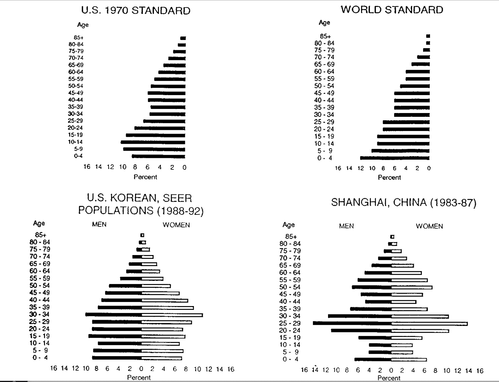

A6 Age standardization of cancer rates
Vincent J. Carey, stvjc at channing.harvard.edu
May 22, 2026
Source:vignettes/A6_standardization.Rmd
A6_standardization.Rmd## Warning: multiple methods tables found for 'scale'## Warning: replacing previous import 'BiocGenerics::scale' by
## 'DelayedArray::scale' when loading 'SummarizedExperiment'Age adjustment for fair comparisons
Two basic types of comparison are of interest in cancer epidemiology:
- Do cancer rates differ between geographic regions (counties, states, countries, …)?
- Do cancer rates change over time?
Because cancer risks increaase generally as people age, comparisons of cancer risk should account for the “age structure” in the regions or time periods being compared.
Crude rate examples
Crude rates ignore age structure. Here are some examples of mortality rates taken (with rounding) from a Statistics Canada web site.
canada_crude[6,4] = NA
canada_crude## agegrp characteristic 2000 2011
## 1 0 to 39y estimate of population 17000000 17200000
## 2 # cancer deaths 1340 1000
## 3 crude rate 7 5
## 4 40y and older estimate of population 13600000 17150000
## 5 # cancer deaths 61300 71400
## 6 crude rate 450 NA
## 7 All ages estimate of population 30600000 34400000
## 8 # cancer deaths 62640 72400
## 9 crude rate 204 210Question: What is the (rounded) crude mortality rate for the older age group in 2011?
Age structure
The “age structure” of a population is the percentage of population reporting ages in different groups. Usually the grouping is finer than what we are using in this example; more realistic illustrations are given below.
Statistics Canada proposed using the age structure of Canada in 1991 as a reference for standardization. In 1991, 62% of Canadians were age 0 to 39y, and 38% were 40y and older.
We use these percentages to adjust the crude rates.
Adjusted rate computation
For the year 2000, we take the crude rates of 7 and 450 (per 100000 population) and reweight and sum:
7 * .62 + 450 * .38yielding 175.3 per 100000 “standard population”. This is the age standardized mortality rate in the year 2000.
Some examples of age structure models
A methods paper on confidence intervals for standardized rates includes the following display:

Age structure
We read this as showing that in the US in 1970, about 18% of the population was under 10 years of age, while in the world overall, about 22% of the population was under 10 years of age.